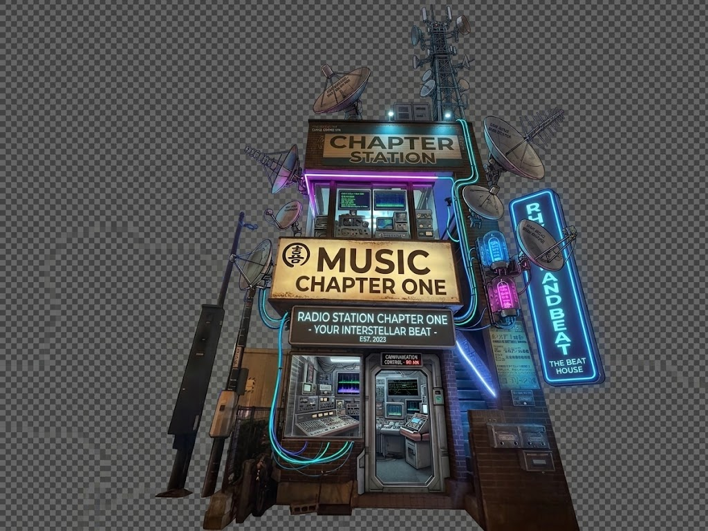

👆
日本語
日本語
THE FILE
EXTRA
LUCKY FILE
GOGO!!
■
■
■
🔎
📌
🧷
🗂️
KNOWN ASSOCIATES
FOLLOW THE CASE
𝕏
X
@Phophomonster
▶
YouTube
ゾンビのゾンゾン
◙
Instagram
@zombie_of_zonzon
◉ DEVELOPING…
LINK COPIED
⏮
⏸
🔊
⏭
🔗
✕
🔊
▶
PLAY
♪ BGM
▾
▶
Purun Purip Rappa
☎ DIAL A TRACK

👆
✕
DIAL A TRACK